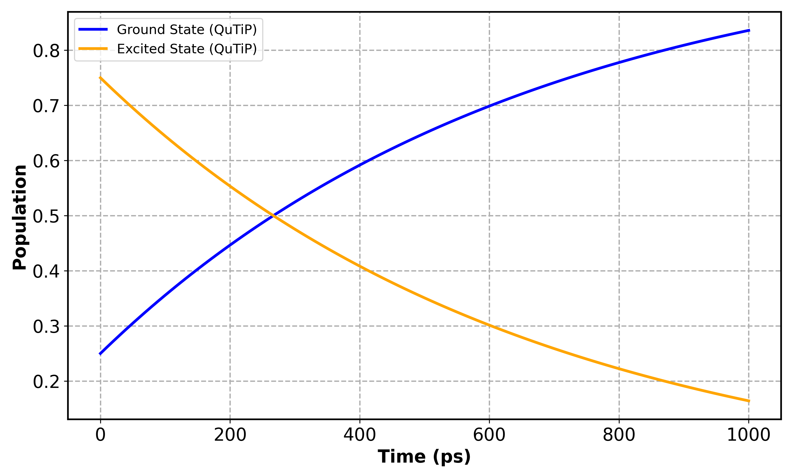
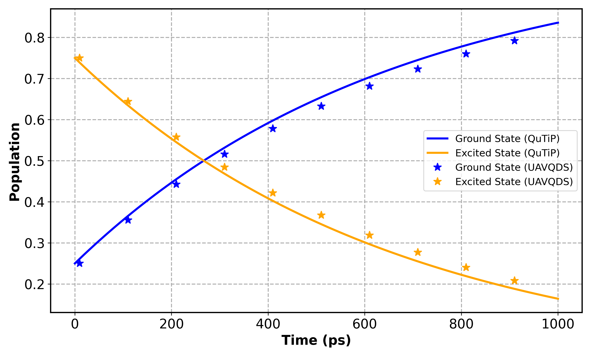

Amplitude Damping Channel Using UAVQD
This page focuses on the example: amplitude damping using the vectorized variational method with an unrestricted adaptive ansatz. The amplitude damping model describes energy loss from an excited quantum state to a lower-energy state (e.g., spontaneous emission). Here, we simulate this process using:
- The vectorized representation of the density matrix.
- The adaptive variational ansatz, which grows automatically when accuracy drops.
- A single-qubit system undergoing amplitude damping with decay rate (\(\gamma = 1.52 \times 10^9 \text{ s}^{-1}\)).
Unrestricted Adaptive Variational Quantum Dynamics (UAVQD)
This section demonstrates the UAVQD method using the vectorized amplitude damping model. The example illustrates how to set up the simulation, run it with adaptive variational updates, and compare the results against numerically exact QuTiP benchmarks.
We first import the required QMAD module from the qflux package and other required standard Python libraries.
import numpy as np
import matplotlib.pyplot as plt
from qflux.variational_methods.qmad.solver import solve_avq_vect
from qflux.variational_methods.qmad.effh import VectorizedEffectiveHamiltonian
from qflux.variational_methods.qmad.ansatzVect import Ansatz
Define Pauli matrices and ladder operators, which will form the building block for the representation for the amplitude damping process.
sx = np.array([[0, 1], [1, 0]])
sy = np.array([[0, -1j], [1j, 0]])
sp = (sx + 1j * sy) / 2 # raising operator
Id = np.eye(2, dtype=np.complex128)
We now define simulation parameters such as total time (tf), time step (dt), and damping rate (gamma). These match typical amplitude damping timescales for a single qubit.
The system Hamiltonian is taken as identity since this model focuses on dissipation rather than coherent evolution.
Constructing the Vectorized Effective Hamiltonian
The vectorized formalism rewrites the Lindblad master equation as a linear equation acting on a vectorized density matrix. The function below constructs the corresponding effective Hamiltonian used in the variational evolution.
This automatically builds the dissipative superoperator terms associated with the amplitude damping collapse operator.
We initialize the quantum state and define an unrestricted adaptive ansatz. The ansatz adjusts its depth automatically based on the residual norm computed during evolution.
u0 = np.array([1/2, np.sqrt(3)/2], dtype=np.complex128)
u0 /= np.linalg.norm(u0)
ansatz = Ansatz(u0, relrcut=1e-6)
The relrcut parameter determines the sensitivity of adaptive growth: smaller values increase precision but require deeper circuits.
Running the UAVQD Simulation
We now evolve the system using the adaptive variational solver solve_avq_vect. The function returns time steps and density matrices over the full trajectory.
Extract ground and excited state populations from the diagonal elements of the resulting density matrices.
excited = [res.u[i][1, 1].real for i in range(len(res.u))]
ground = [res.u[i][0, 0].real for i in range(len(res.u))]
times = np.arange(0, tf + 1e-30, dt)
Operator Pool Definition
Please note that the default operator pool used in UAVQD simulations is defined within the source code.
It consists of basic Pauli operators (sx, sy, sz) that form the minimal basis for constructing the variational ansatz:
def build_pool(nqbit):
pauliStr = ["sx", "sz", "sy"]
res = []
for order in range(1, 3):
for idx in combinations(range(1, nqbit + 1), order):
for op in product(pauliStr, repeat=order):
res.append(PauliOperator(op, list(idx), 1, nqbit))
return res
Reference Calculation using QuTiP
To validate the UAVQD results, we compute a reference solution using QuTiP’s master equation solver (mesolve).
from qutip import mesolve, Qobj, basis
sp = Qobj(sp)
H = Qobj(np.eye(2, dtype=np.complex128))
# Time grid matches the UAVQD simulation
times = np.arange(0, tf, dt)
# Define damping operator and initial state
gamma = 1.52e9
psi0 = Qobj(u0)
rho0 = psi0 * psi0.dag()
c_ops = [np.sqrt(gamma) * sp]
# Projectors for populations
proj_g = basis(2,0)*basis(2,0).dag()
proj_e = basis(2,1)*basis(2,1).dag()
res_qutip = mesolve(H, rho0, times, c_ops, [proj_g, proj_e])
G_q, E_q = res_qutip.expect[0], res_qutip.expect[1]
Plot QuTiP results for direct comparison.
plt.plot(times*1e12, G_q, label='Ground (QuTiP)')
plt.plot(times*1e12, E_q, label='Excited (QuTiP)')
plt.xlabel('Time (ps)')
plt.ylabel('Population')
plt.legend()
plt.tight_layout()
plt.show()

Combined Comparison Plot
Overlay UAVQD and QuTiP population curves for a unified view.
plt.figure(figsize=(8,5))
# QuTiP baseline (solid lines)
plt.plot(times*1e12, G_q, label='Ground (QuTiP)')
plt.plot(times*1e12, E_q, label='Excited (QuTiP)')
# UAVQD sampled markers
step = max(1, len(times)//10)
plt.plot(times[::step]*1e12, ground[::step], '*', label='Ground (UAVQD)')
plt.plot(times[::step]*1e12, excited[::step], '*', label='Excited (UAVQD)')
plt.xlabel('Time (ps)')
plt.ylabel('Population')
plt.legend()
plt.grid(True, ls='--', lw=1.2)
plt.tight_layout()
plt.show()

References
- Chen et al., Adaptive Variational Quantum Dynamics for Open Systems (2024).
- Shivpuje et al., Designing Variational Ansatz for Quantum-Enabled Simulation of Non-Unitary Dynamical Evolution — An Excursion into Dicke Superradiance, Adv. Quantum Technol. (2024), https://doi.org/10.1002/qute.202400088